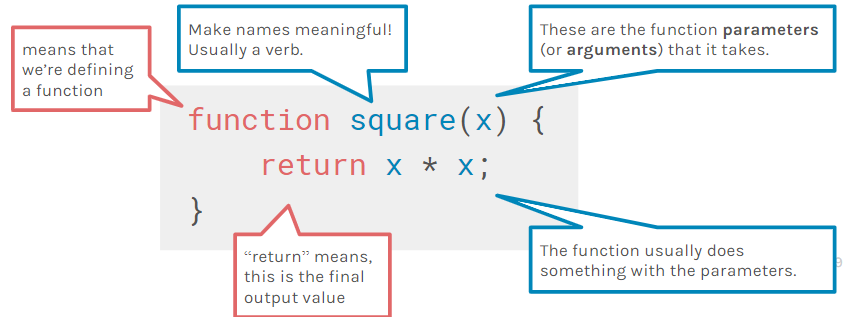
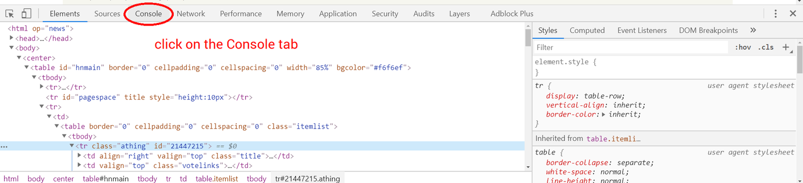

What we'll be doing
Before you start this homework, make sure you watch the lecture! Know what variables, functions, parameters, and return values are, since we will be using those.
Part 1: File Set-up
So far in class, we've mostly been running JS in the browser console (and we're going to do some more of that later in this homework too). But for this first part, let's actually properly make a JS file and include it in our HTML page!
- Create a file named
script.jsand put it in theassets/jsfolder. You will only need to edit this JS file for this homework assignment, except for the very next step. - Now in
index.html, we want to specify where to find the JS file, just like how we tell it where to find the CSS file. Put this inside theheadtags in your HTML file, and fill it in with the appropriate file path:
IMPORTANT: Do not edit any other line in your<script src="FILE PATH"></script>index.htmlexcept for adding thisscripttag!
So now, when the browser loads index.html, it will also load the JS file. Then, as soon
as the file is loaded, the browser will proceed to run the JS file line-by-line.
Part 2: Writing Functions
For this part of hw, we'll be writing code in the file you just created, script.js.
Recall from lecture the structure of a function:

- Write a function called
averageThreeNumbersthat takes 3 arguments and returns the average. Here is a code skeleton:
If you are having a hard time understanding this code skeleton, break it down in terms of what each word represents. Compare the code with the function structure above. What isfunction averageThreeNumbers(a, b, c) { let sum = _________; let ___ = _______; return ___; }sum? What are you calculating in the second line? What do you ultimately want toreturn? - Write a function called
createSentencethat takes two arguments: a number callednumand a string callednoun. The function should return a string in this format:On average, a Berkeley student has [num] [noun]s.For example: when you callcreateSentence(12, "squirrel"), the function should returnOn average, a Berkeley student has 12 squirrels.
If you have previous CS experience already, try doing this function with a template string. - Make a function called
getRandomNumthat takes one argument, a number calledmax, and returns a random number between 0 andmax(exclusive). JS has a built-in function calledMath.random()that, when called, gives us a random number between 0 and 1 (exclusive). Here, you want to be able to adjust themaxvalue to a number other than 1. Take a look at this page, which contains documentation and examples about thisMath.random()function, to figure out how to do so.(You can get to that page by googling "mdn javascript random". In the future, it's helpful to add "mdn" to your google search, since the Mozilla Developer docs are an industry standard, and usually the most reliable).
Part 3: Playing with the web console
So you wrote the three JS functions in Part 2, but how do you know that they output the correct expected result?
At the end of this assignment, your index.html should look like this. Every time you
refresh the page, you should see new values for each of the 5 variables in your window. Verify that
the avg variable is the correct mathematical average of x, y,
and z, and that your sentence variable is a string that uses the
avg value correctly. You will also be uploading a screenshot of your web console output
after you finish Part 3.2.
If you look into your index.html file, you will notice that at the bottom of the page,
there is another script tag that contains some inline JS that runs once everything
above it is finished loading. Inside the window.onload function (a function that
automatically runs once the window is loaded), we use document.getElementById, which is
a very useful function that we will cover in the next lecture. But for now, don't worry about the
content of our index.html!
Part 3.1: Function calling and variables
We need to call our three functions in order to invoke the expected action on our parameters. But, in order to preserve the return value from these functions, we need to store them in variables.
- In your
script.jsfile, after you declared your three functions that you finished in Part 2, declare three new variables, calledx,y, andz. Assign the return value ofgetRandomNumwhenmaxis equal to 20 to the variablex. Do the same forywhenmaxis 10, andzwhenmaxis 13. Each line of code should resemble:let _ = getRandomNum(__); - Next, we will use our
averageThreeNumbersfunction. As you may recall, it takes in 3 arguments and returns the average of the 3 numbers. Call this function onx,y, andz, and assign the average value to a new variable calledavg. - Almost there! We will then use our
createSentencefunction to construct a sentence using the average numberavgfrom Step 3 and the name of your favorite animal. Assign the returned string value to a new variable calledsentence. - You should now have 5 different variables (
x,y,z,avg, andsentence) initialized with the return values from calling those 3 functions! Let's add one final line to our JS file:console.log(sentence);
We're done writing our script.js file! Let's go to our index.html file in
our browser to see what happens!
Part 3.2: console.log
For this part, we're going to use the console. We're going to type JS code line-by-line into the console, so that we can really understand what is happening.
For this class we'll be providing instructions for using the console and tools in Google Chrome. Other browsers like Firefox have their own, similar console and web developer tools, but for consistency we recommend that you follow along using Chrome.
To get to the console:
- Make sure your
index.htmlfile is opened in Chrome. - Right-click anywhere on the page and select Inspect Element. Alternatively, you can cmd/ctrl + shift + i.
- Click on the Console tab shown below. 
We recommend that you have two browser windows open side-by-side, with this page on the left and
index.html on the right, so that you can follow the instructions easily.
- You should see something printed in the console log! If you don't, go back to Part 3.1 and figure out what you did wrong.
- Let's manually type some commands in our console. Our console serves as a temporary JS file,
where we can declare variables and functions and return their values. Type out the following in
your console:
What does the console log say? Think about what this line of code does and if it is supposed to return any value.let num = getRandomNum(100); - Next, call
getRandomNumagain, but this time usingnumas the max value, and not assigning the return value of this function to any variable. What does the console log say? Why is this output different from the previous step's console output? - What is our
numvariable? Let's type this in our console:num - Finally, screenshot your console log output and upload it into your assignment folder, labeling
the image as
console.png.
As usual, complete this week's reading response in design_responses.html
Submit your files to your GitHub Submission Repository by copying all the files from hw7-starter into the hw7 folder of your submission repository (replace the index.html originally in it). In your terminal, from your GitHub Submission Repository, run the following Git commands:
- git add -A
- git commit -m 'finished hw7'
- git push
This assignment is due Thursday, October 26th at 7:00PM PT.